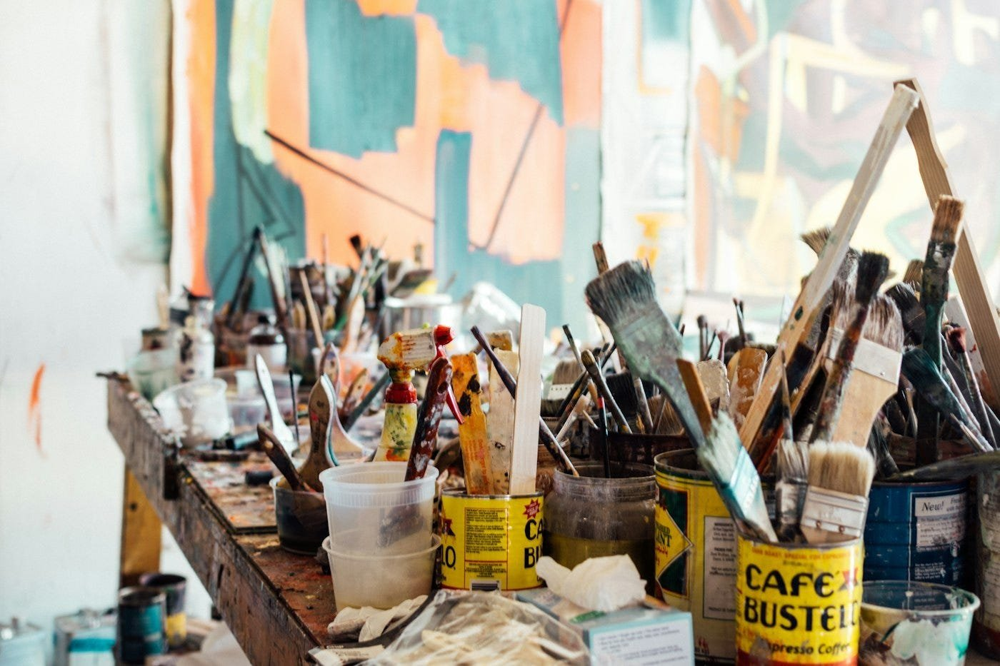
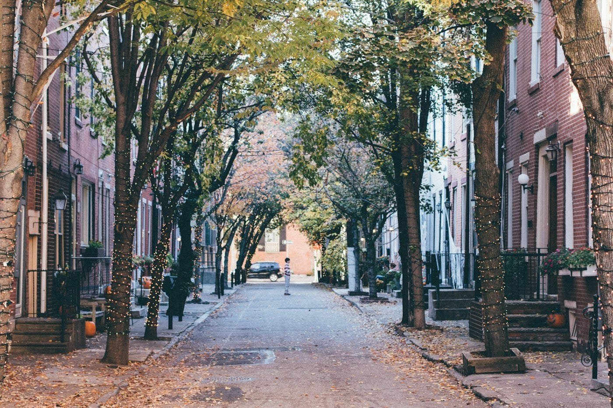
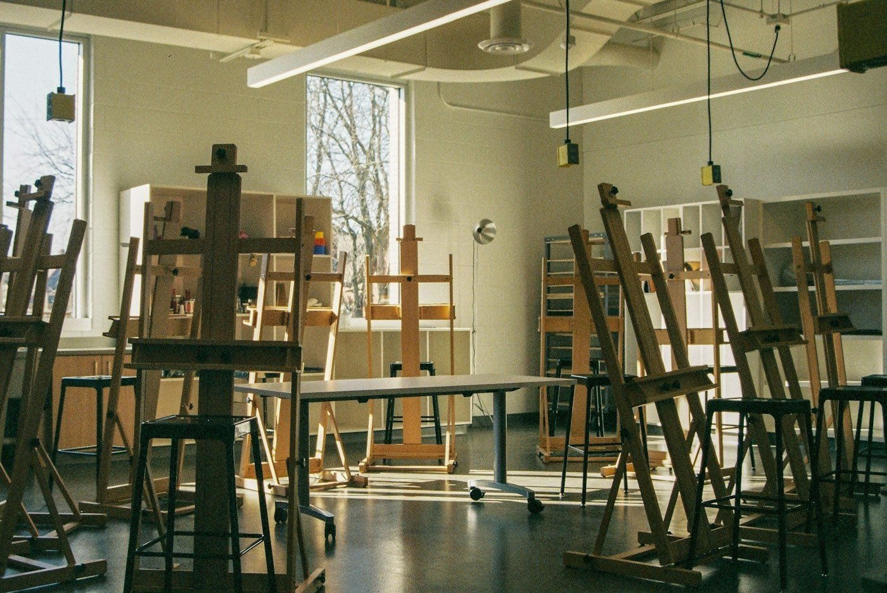
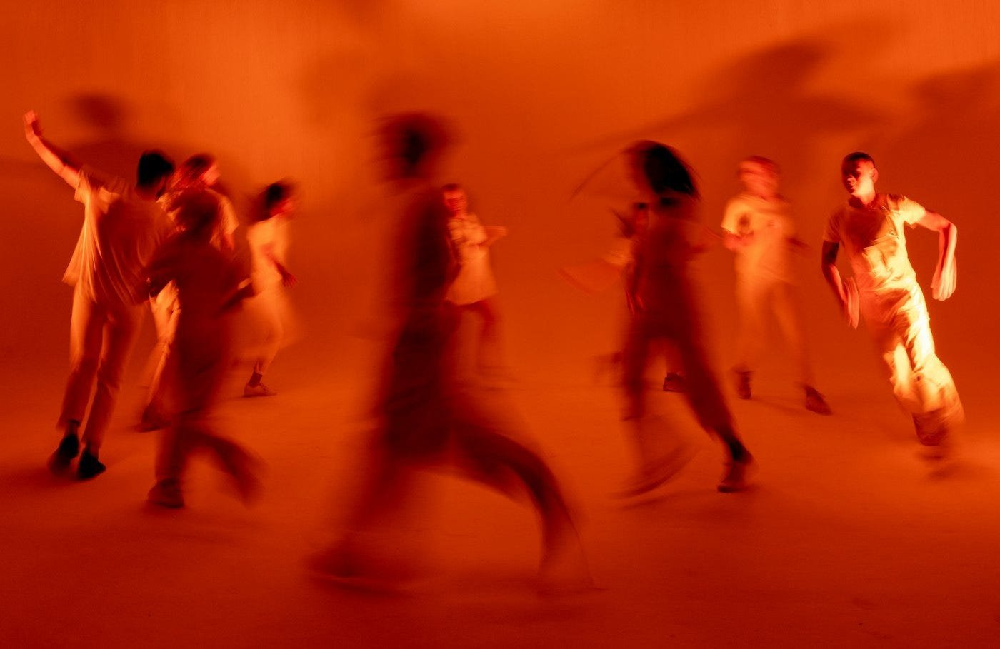
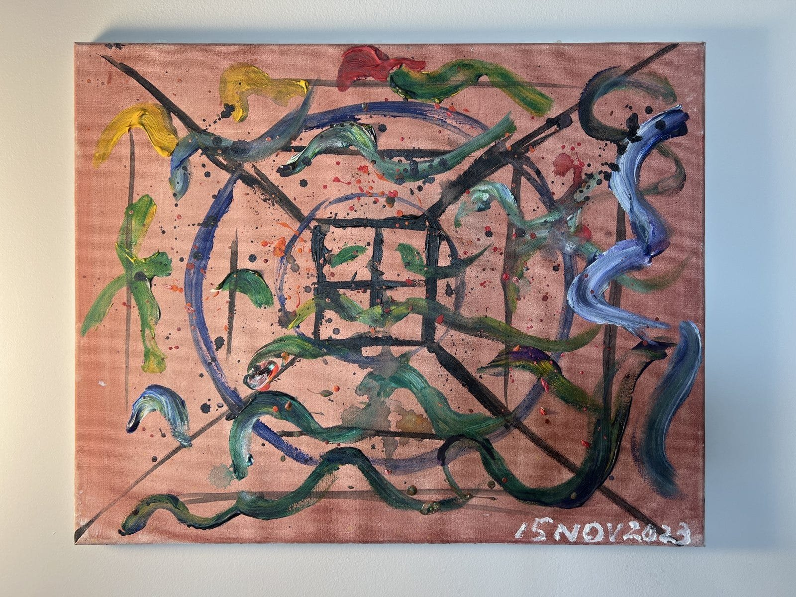
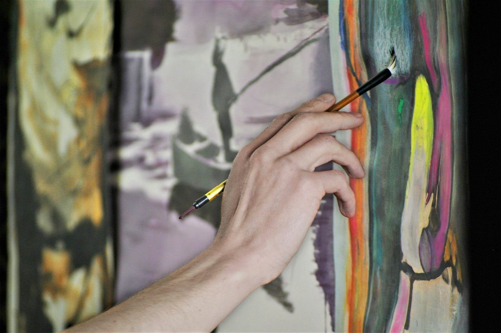
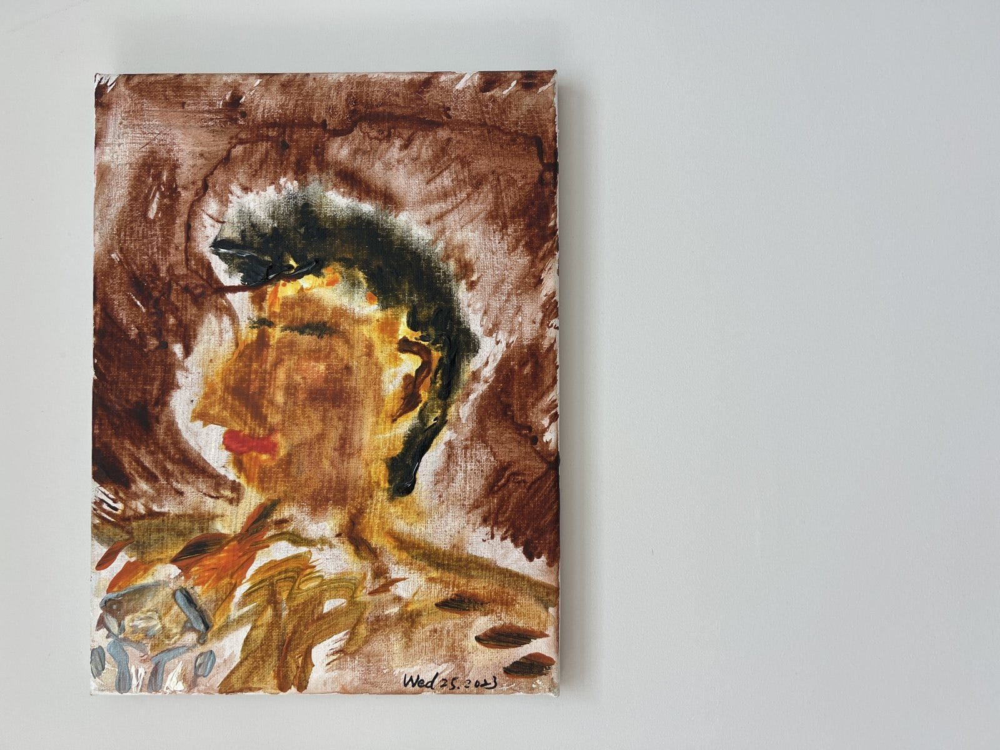
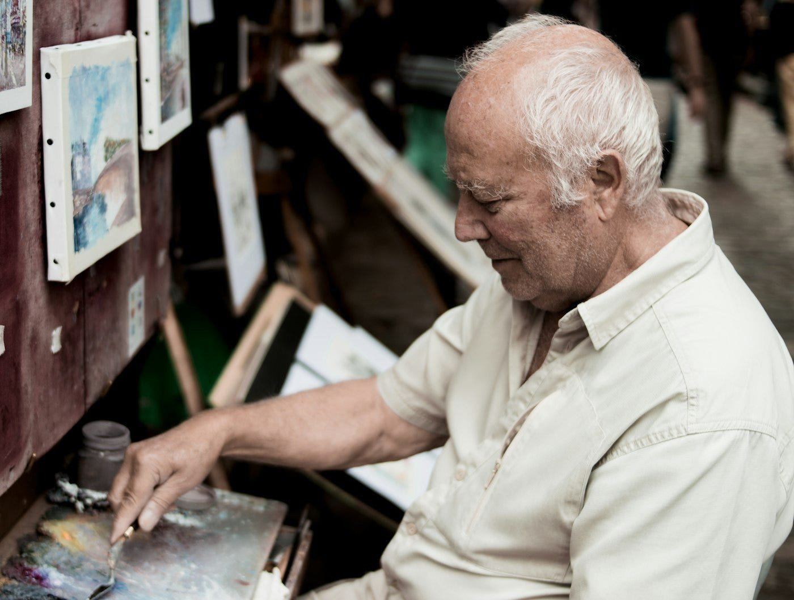
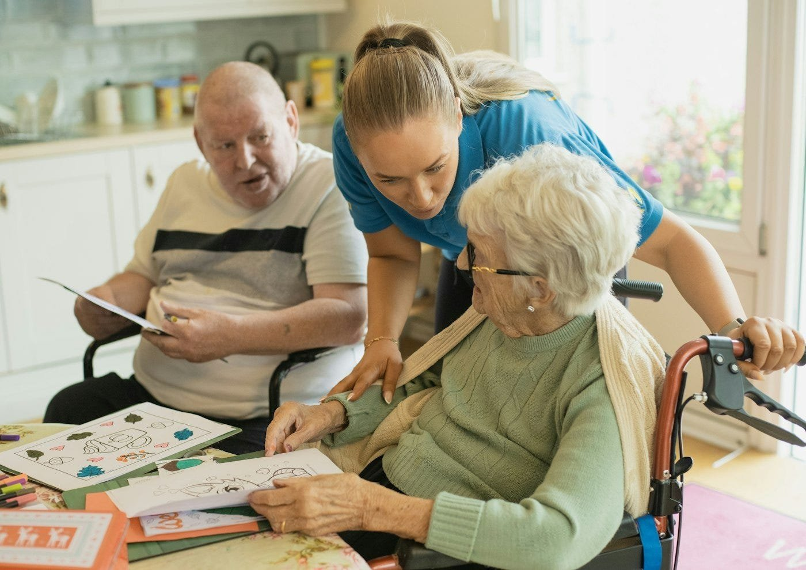
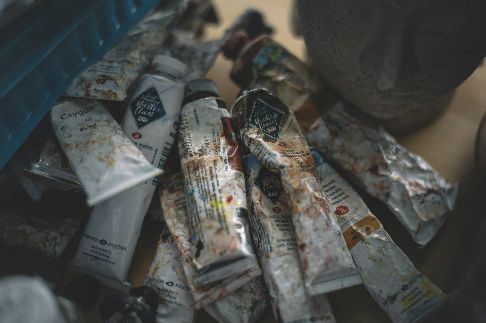

為什麼我總是回到藝術
這是我在 SVA MFA Interaction Design 修 Studio Partnership II 的每週課程日誌，整門課圍繞著 Stanford Center on Longevity Design Challenge 展開，和我畢業製作的文章分開記錄。
Studio Partnership II 進入第二週。在開始聊這週查到的文獻資料之前，我想先退一步問自己更基本的問題，我到底為什麼要參加這個比賽？
老實說，這得從我唸書的地方講起。我們系雖然是互動設計，但設在一所藝術學校裡，我總覺得不管最後端出什麼作品去比賽，藝術都應該在裡面佔有一席之地。還有第二個原因，講起來比較沒那麼好聽。不管我做不做這件事，AI 和機器人都會越來越強。世上多的是人能做出更厲害的機器人，而且絕對做得比我好太多了。那我有什麼東西是他們沒有的？大概就是藝術吧。

上週我寫道，快樂的老年生活，無非是可以多做自己喜歡的事、把失去的找回來，還有守住那些珍視的東西不讓它淡去，像是記憶、感受，以及你曾覺得美好的事物。在我的認知裡，只有藝術這件事能一次做到全部。我會這麼確定，是因為它就曾經這樣幫過我。
2023 年我剛搬到費城沒多久，就去當地的社區藝術學校 Fleisher Art Memorial 買了年費會員，從課表上挑了一堂療癒藝術課。那堂課我上了大約十次，每次的流程都差不多。一開始大家會先動一動身體，跳點小舞、甩甩手臂，把身體鬆開來，接著才開始畫畫。畫完之後，大家會圍在一起聊聊自己為什麼畫這些；不想講也沒關係，你完全可以什麼都不說。在那間教室裡，沒有任何事是強迫的。



當時畫的那些畫，現在還掛在我家牆上，這篇文章裡也放了其中兩張。那間教室帶給我的幾件事，一直跟著我走到現在這個專案裡。

畫得好不好看，已經不重要了。我不會去評斷這些畫，因為那就是我的作品。市面上大多數產品都用「成品好不好看」來衡量成敗，但我想要換一套標準，去問這件作品是不是當事人親手做出來的？

每一張畫都留住了當時的心境。我現在看著某張畫，就能知道自己那天是什麼心情；有幾張我甚至還記得動筆的當下腦子裡在想什麼。畫作不需要靠文字，就能把當下的心理狀態保存下來。
整個過程也完全不勉強。你要動身體、要創作、要分享，或是保持沉默都可以。這套流程在設計上本來就留了退路，隨時可以退出，反而讓人覺得很安全，敢踏出第一步。
上面那張 2023 年 11 月 15 日的畫，是我覺得最能總結整門課的一幅，也是接近尾聲時畫的。剛下筆的時候我還很規矩，乖乖畫著整齊的方格線；畫著畫著，線條變成了圓圈，接著又變成鬆開來的曲線，到最後我根本是直接把顏料甩到畫布上。現在回頭看，這幅畫就像在記錄腦袋裡的思緒怎麼一點一點鬆開、開始流動。這就是那十堂課帶來的改變。下面這張則是課程前期畫的人像，畫得不太像，但也不需要像。

SVA 本身就有藝術治療系，所以這個念頭一直離我很近，問題也幾乎就擺在眼前。如果把機器人和療癒藝術放在一起，再加上高齡長輩，會發生什麼事？

這週我的文獻研究，先從目前找得到實證最充足的計畫看起，也就是 Miami University 為失智症患者開發的 Opening Minds through Art。這套計畫的第一條設計原則是「絕對不能有失敗的可能」，所以創作內容全是抽象畫，既不需要依賴記憶，也不講求技巧。計畫裡的志工都受過訓練，陪伴長輩創作時，絕對不能替對方做任何美感上的決定。而且整個計畫完全靠人力在跑，一位志工配一位長輩，每週一小時。讀到這裡，我心裡冒出個問題，但翻遍文獻都找不到答案。如果規定志工完全不能插手作品本身的美感決定，那志工的那雙手實際上都在做些什麼？大概是幫忙轉開顏料蓋、壓住畫紙、遞畫筆吧。不管這張清單最後列出來有哪些事，那應該就是在不違反計畫原則的前提下，機器可以接手幫忙的部分。


我也學到了有哪些話不能亂講。在很多州，「藝術治療師」是受法律保護的專業頭銜。不管設計出來的東西實際上做了什麼，都不能宣稱自己在做藝術治療。
這週上課時，Pinar 給了我們問題定義的架構，包含背景脈絡、現況缺口，還有這件事的重要性。這就是我第三週的功課了。